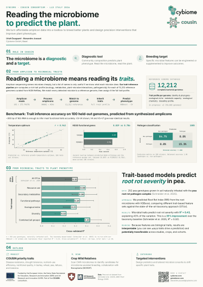
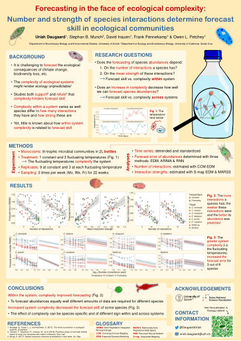
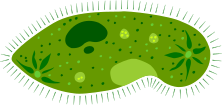
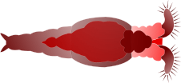

Talks & Teaching
Conference talks and posters on ecological forecasting and species interactions, and undergraduate statistics teaching at the University of Zurich.
Talks
Posters

COUSIN: plant-microbiome contributions to crop resilience.
Let's Liberate Diversity (LLD) · Scandicci (Florence) · Italy · May 2026 · with Alexandre Jousset · Cybiome / EU Horizon Europe COUSIN consortium.
Poster pdf ↗
Forecasting in the face of ecological complexity: number and strength of species interactions determine forecast skill in ecological communities.
INTECOL 2022 · 13th International Congress of Ecology · Geneva · Aug 28 - Sep 2 2022. Selected as one of 10 best posters invited to a flash talk during the opening plenary.
same poster, also shown atEcology Symposium · hosted by Life Science Zurich Graduate School · Zurich · Oct 12 2022.
Poster pdf ↗

Teaching
Data analysis in biology. About 300 second year biology bachelor students per year. Topics include data visualisation and processing, statistical hypothesis testing, linear and logistic and Poisson regression, linear mixed models, intro linear algebra for linear models, goodness of fit. Theoretical lectures paired with practical sessions and flipped classroom videos.
My role. Taught four of the theoretical lectures in 2024.
Practical exercise support, methodological and computational (R) Q&A, main contact for statistical questions outside class hours, course forum support. Wrote a statistics and computation FAQ for the students proactively.
Head TA in 2022 and 2023. Screening of TA candidates, briefing and organisation of the selected TAs, primary TA contact person.
An Introduction to the Basics of R. Two-day course for novice R users with a life and environmental science background.